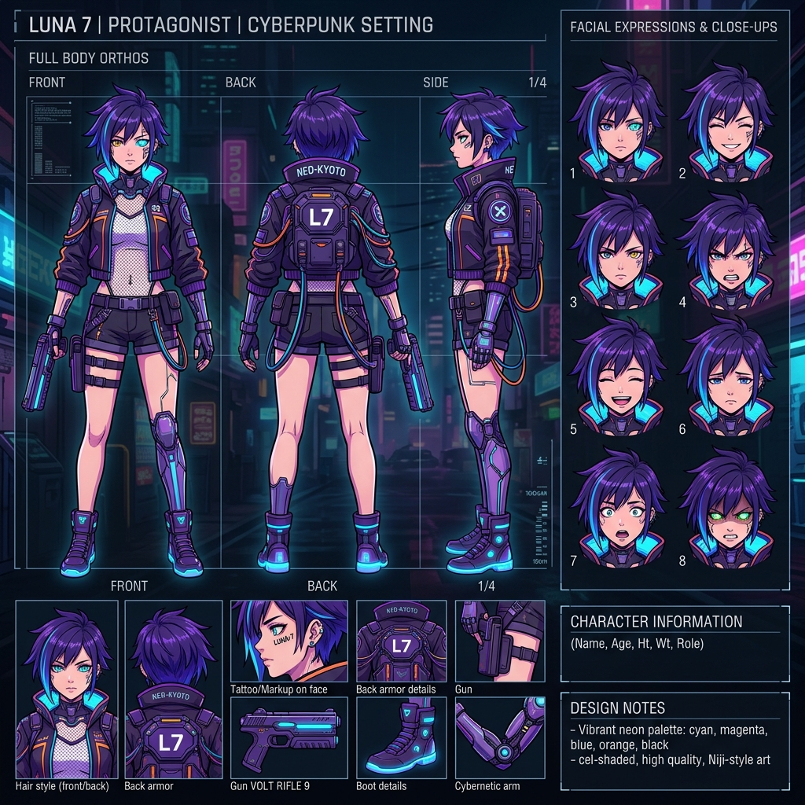
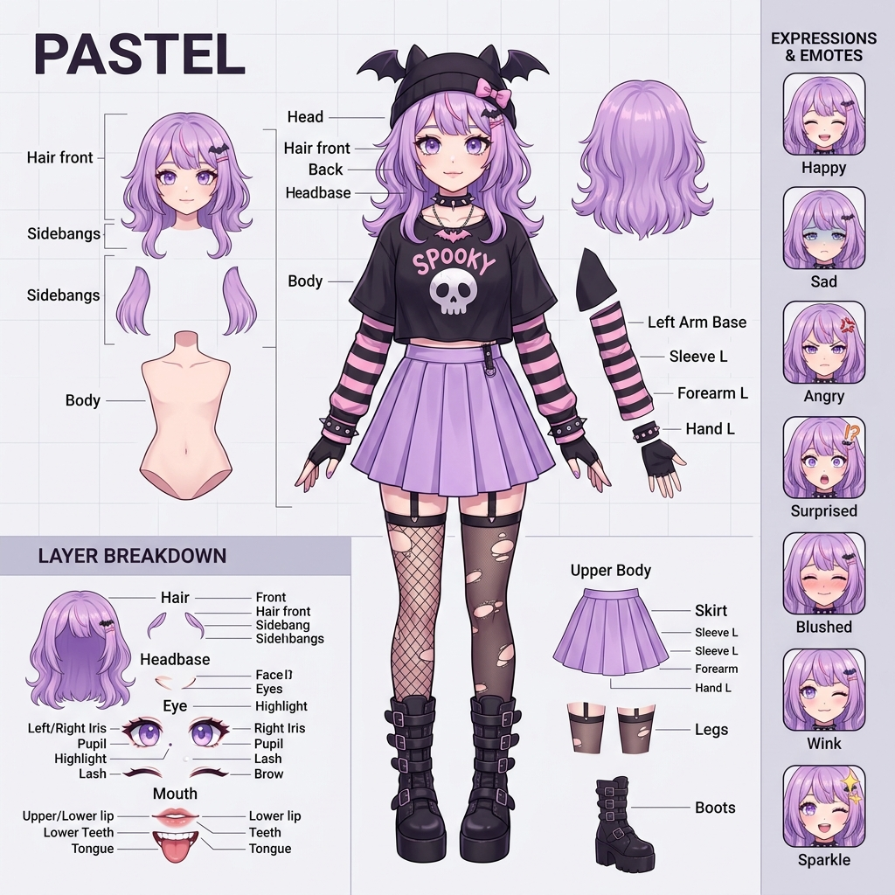

核心脈絡與關鍵問題：輔助模組定位與流程重構
生成式 AI 在動漫角色設計裡，已從發想工具變成商業管線的輔助美術模組。創作者用 Midjourney 的角色參考參數（--cref），就能以低於傳統外包的成本產出三視圖與表情差分。進階團隊則改用 Stable Diffusion 或 Flux，搭配骨架控制（ControlNet）與微調權重（LoRA）鎖定細節。不過，前端出圖變便宜，依然省不掉後段的人工精修。
傳統角色設定得依序畫完草圖、配色與正側背三視圖，中期一旦改風格，前期工時就得重來。改用 AI 後，團隊能把風格確認壓縮在幾小時內，走完三階段疊代。但進到遊戲或虛擬主播（VTuber）實務，控制精度、本地算力與商用版權才是決定能否發行的關卡。
- 文字轉視覺打樣：用提示詞把世界觀與服裝畫出來，幾小時內就能收斂多組風格方向。
- 多視角設定集生成：用
character sheet, multiple poses指令產出三視圖，當作後續 3D 建模或 2D 立繪的比例基準。 - 特徵錨定與局部修復：鎖定基準圖後，用局部重繪（Inpainting）修補手指變形、不對稱飾品與服裝破綻。

底層機制拆解：角色一致性路線與實務瓶頸
要讓同一個角色在不同角度、動作與光源下長得一樣，目前主要靠「雲端參考參數」和「本地權重微調」兩條路線。兩者在硬體門檻、結構控制力與後製自由度上各有取捨，直接決定後續 3D 建模和 2D 拆圖的工時成本。
路線一：Midjourney 與 Niji v6 的雲端參考鎖定
你在提示詞尾端加上 --cref [參考圖網址] --cw 100，Midjourney 就會讀取參考圖的五官與服裝特徵並套進新圖。這條路線免裝機、不吃本地顯示卡（GPU），出圖美感也穩定。但雲端封閉架構沒辦法微調幾何細節，複雜飾品一轉到側面或背面就容易走樣。它很適合拿來做前期提案與風格探索，卻撐不起高精度的商業量產。
路線二：Stable Diffusion 與 Flux 的權重微調及結構控制
本地開源管線的做法，是先備妥 15 到 20 張同角色、多角度的圖集，訓練出專屬的 LoRA 特徵權重。出圖時再掛上 ControlNet，用 OpenPose 骨架、Canny 線稿或 Depth 深度圖鎖定姿勢與構圖。這套組合能精準控制視角和服裝紋理，方便獨立遊戲團隊重複生產。代價是團隊得準備至少 12 GB 到 16 GB 顯示記憶體（VRAM）的硬體，還得會幫節點工作流工具 ComfyUI 除錯。
應用因果一：獨立遊戲原型與 AI NPC 的拓撲限制
遊戲開發前期，團隊會把 AI 產出的三視圖丟進 3D 建模工具（例如 NVIDIA ACE），做出白模與可玩原型。角色定案後，再串接大型語言模型（例如 Inworld AI），讓非玩家角色（NPC）擁有記憶與即時對話能力。但 AI 直出的 3D 模型往往拓撲網格雜亂、UV 貼圖展開破碎，沒辦法直接拿來即時渲染。資產進 Unity 或 Unreal 引擎前，技術美術還是得手動重拓撲（Retopology），遊戲幀率才穩得住。
應用因果二：虛擬主播立繪與 Live2D 拆件落差
過去外包一套可商用的 2D 動態立繪（Live2D）分層圖，費用動輒新台幣數萬元。現在用 AI 雖然能生出白底、對稱站姿與多表情的立繪概念圖，卻離匯入 Live2D Cubism 還差一大截。AI 只會輸出單層扁平圖，畫不出被頭髮遮住的眼睛，也補不齊被手臂擋住的裙擺，圖層之間全黏在一起。創作者還是得花幾小時手動拆件、補畫遮擋處，才能開始綁定骨架。

如果把語音合成（例如 ElevenLabs）和即時語言模型接起來，就能做成 24 小時自主運作的 AI VTuber，但這時的瓶頸會轉移到互動端。團隊得壓低語音與畫面的直播延遲，同時調準口型同步（Lip-sync）。系統也必須加上安全護欄，避免模型在公開直播時講出違規內容。
關鍵決策矩陣：四類生產管線與風險對比
挑角色設計工具鏈時，不能只看單張圖好不好看，還得把硬體門檻、圖層可編輯性與法務合規算進來。純雲端生成雖然零硬體成本，但在圖層拆解與著作權保護上風險最高，下表整理了四種主流管線的實務差異。
| 生產管線方案 | 角色一致性與控制精度 | 算力與技術門檻 | Live2D 圖層分離度 | 商用版權與平台合規風險 |
|---|---|---|---|---|
| Midjourney / Niji v6 | 中（--cref 可鎖定大致特徵，但細部飾品易漂移） |
極低（純雲端訂閱制，無需本地顯卡） | 極低（產出為扁平單層圖，無法直接綁定） | 高風險：缺乏訓練集透明度，純 AI 產出在美國等司法管轄區不受著作權保護，Steam 發行須明確揭露 |
| SDXL / Illustrious + ControlNet + LoRA | 高（可精確控制骨架姿勢、視角與服裝紋理） | 中高（建議至少 12GB–16GB VRAM GPU 與 ComfyUI 節點除錯能力） | 低至中（可搭配分部生成與圖層拆解外掛，但邊緣仍需大量手修） | 中高風險：開源社群底模與 LoRA 權重常包含未授權畫師風格，商業專案須嚴格過濾訓練資料來源 |
| 商業授權模型（如 Adobe Firefly）+ 人工精修 | 中低（動漫風格表現力較社群模型弱） | 低至中（雲端整合，需結合 Photoshop 後製） | 高（經人類繪師於 PSD 分層重繪補齊遮擋部位） | 低風險：訓練資料來源可追溯，具備企業級賠償條款，較易通過大型發行商法務審查 |
| AI 打樣 + 人類繪師完整重繪（混合管線） | 極高（100% 符合設定集與幾何透視） | 低硬體門檻，但需編列美術精修工時預算 | 極高（直接產出標準 Live2D PSD 分層檔） | 極低風險：AI 僅作為內部概念參考，最終商業交付物具備完整人類創作著作權 |
適用邊界、限制與導入行動建議
AI 角色設計最大的價值，是把前期從零到一的風格試錯成本壓低 70% 以上，讓團隊更快對齊視覺方向。但純 AI 產出受限於單層圖檔結構與訓練資料透明度，在美國等司法管轄區不受著作權保護，Steam 發行時也必須明確揭露。重視長期智慧財產權（IP）價值的團隊，不能把生成圖當成最終商用交付物。產線設計必須在效率與法務風險之間劃清界線。
對獨立遊戲與商業 IP 團隊來說，最穩健的作法是把 AI 限縮在概念打樣、氣氛板與內部測試白模。只要涉及公開發行、周邊授權或 Live2D 綁定，還是得編預算請人類繪師做結構校準與 Photoshop 分層檔（PSD）重繪。用 AI 打樣收斂方向，再交給人類繪師定稿，才能既省下前期工時，又守住美術品質與完整著作權。
參考資料與延伸閱讀
- Adobe：AI 生成角色設計流程與商業合規架構指南
- Promptomania：Midjourney Niji 角色設定圖（Character Sheet）與
--cref實戰手冊 - NVIDIA ACE：數位人類技術與遊戲 NPC 應用白皮書
- Inworld AI：遊戲 NPC 記憶與行為系統開發文件
- VTuber 開發社群：AI 概念立繪轉製 Live2D Cubism 與 VTube Studio 拆圖實作筆記